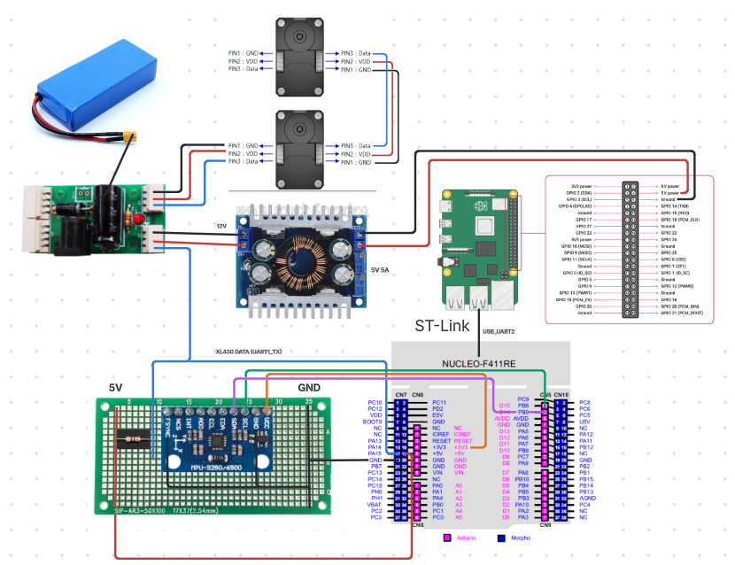
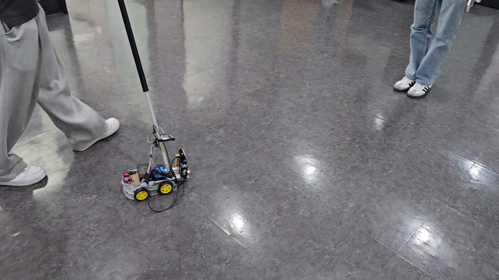

전원부
배터리와 전원 분배부, DC-DC 변환기를 연결해 각 장치의 전원을 구성했습니다.
안녕하세요, 펌웨어를 개발하는 오은지입니다.
모터 제어에서 ROS 2 연동까지.
하드웨어와 소프트웨어 사이의 주행 로직을 만듭니다.
FEATURED PROJECT
STM32F411 보드를 MCU로 사용하는 주행로봇 제어 시스템. XL430 바퀴 모터, MPU9250 IMU, 창고 적재용 리니어 모터와 ROS 2 연동 펌웨어를 담당합니다.
하드웨어 구성 보기주행로봇 / 안내견 로봇 / RC Car / PLC
01 — 08직접 구성한 하드웨어

전원부 · STM32F411 · XL430 · Raspberry Pi · IMU
배터리와 전원 분배부, DC-DC 변환기를 연결해 각 장치의 전원을 구성했습니다.
F411 보드를 MCU로 사용하고, Raspberry Pi와 연결해 상위 주행 명령과 상태 데이터를 주고받습니다.
좌우 XL430 바퀴 모터와 IMU를 연결해 구동부와 센서부를 구성했습니다.
하드웨어 구성 · 제어 · ROS 2 연동
UART 기반 DYNAMIXEL 통신으로 좌우 바퀴를 구동합니다. 주행 명령을 모터 속도로 변환하고, 엔코더 위치·속도 피드백을 수집합니다.
주행로봇의 움직임을 감지하는 MPU9250 IMU를 담당합니다. 센서의 하드웨어 연결과 펌웨어 연동을 구성합니다.
지게차 로봇이 창고에 물품을 적재할 때 사용하는 리니어 모터를 담당합니다. 적재를 위한 승강 동작과 모터 제어 로직을 구성합니다.
STM32F411 보드를 주행로봇의 MCU로 사용합니다. Raspberry Pi, 바퀴 모터, IMU와 리니어 모터를 연결하는 하드웨어 구성을 담당합니다.
FreeRTOS 기반으로 제어 코드를 구성하고, micro-ROS를 통해 Raspberry Pi의 ROS 2와 연결합니다. 주행 명령 수신과 상태 피드백을 펌웨어에 통합합니다.
차동 구동 명령 처리와 엔코더 기반 odometry를 구성합니다. ROS 토픽으로 바퀴 상태·위치를 전달하고, 명령 타임아웃과 속도 제한을 주행 로직에 반영합니다.
하드웨어 구성부터 모터·센서 제어, ROS 2 통신까지 주행로봇의 펌웨어를 담당합니다.
PWM · PID · UART · 코드 통합
사용자의 의도와 장애물 회피 명령을 하나의 주행 로직으로.

손잡이의 기울기를 따라 움직이고, 상위 시스템의 장애물 회피 명령에 반응하는 주행 보조 로봇입니다.
PWM 출력, PID 제어, UART 통신을 구현하고 개별 기능을 연결하는 전체 제어 로직을 구성했습니다.
제어 로직과 통합
목표 기울기와 현재 값의 오차
F · S · L · R 주행 명령
전후진 성분과 회전 성분을 좌우 출력으로 변환
기울기 오차를 제어 입력으로 사용합니다. 출력 포화 시 적분항의 과도한 누적을 막고 최종 출력을 −255~255로 제한합니다.
Raspberry Pi의 Free·Stop·Left·Right 명령을 수신해 장애물 회피 동작을 우선 처리하도록 주행 흐름을 통합했습니다.
전진·회전 성분을 혼합해 양쪽 모터를 독립 구동하고, 센서 입력과 주행 명령이 같은 제어 경로에서 동작하도록 연결했습니다.
개별 기능의 동작만큼 입력의 우선순위와 모드 전환 조건을 명확히 정의하는 것이 전체 시스템의 동작을 결정한다는 점을 배웠습니다.
Encoder · RPM · PID · PWM
조이스틱 입력을 목표 RPM으로, 실제 속도를 피드백으로.
UART로 전달받은 조이스틱 값을 이용해 좌우 모터의 속도를 제어하는 STM32 기반 RC Car입니다.
엔코더에서 현재 RPM을 계산하고, 조이스틱 값을 목표 RPM으로 치환했습니다. 목표·현재 RPM의 오차를 PID로 연산해 PWM 출력을 결정했습니다.
목표 RPM−현재 RPM
폐루프 속도 제어
일정 시간 동안의 엔코더 카운트 변화량을 읽어 바퀴의 회전속도를 계산합니다.
수신한 조이스틱 값을 좌우 목표 RPM으로 변환하고, 각각의 현재 RPM과 비교해 오차를 구합니다.
각 바퀴의 오차를 PID 제어기에 전달합니다. 계산한 출력으로 PWM과 방향을 제어하고 다시 속도를 측정합니다.
| 프로젝트 | 피드백 기준 | 나의 핵심 구현 |
|---|---|---|
| 안내견 로봇 | 손잡이 기울기 | PID·PWM + 모드 판단·UART·코드 통합 |
| RC Car | 엔코더로 측정한 RPM | 목표 RPM 변환 + 좌우 모터 속도 제어 |
센서값을 제어에 필요한 물리량으로 변환하고, 목표값과 측정값을 같은 단위에서 비교하는 폐루프 제어를 구현했습니다.
MINI PROJECT · VIDEO SHOWCASE
동작을 영상으로 소개합니다.
PLC 미니프로젝트의 동작 영상이 추가될 예정입니다.
Embedded Systems & Robotics Firmware